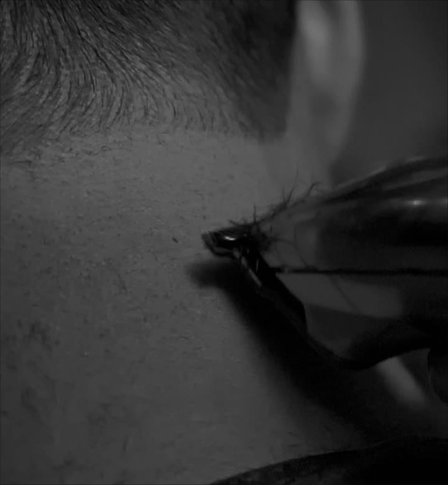
Calendário do mês, visitas toda quarta, stories de todo dia pra equipe, roteiros dos 7 Reels com gancho, as 4 artes do feed, campanha Seg a Qua e perfil novo. Plano Essencial + campanha de bônus.
Revisão feita em 04/11, dia da primeira visita. Escopo, ordem do feed e artes continuam iguais.
Plano Essencial (R$ 1.000/mês) + uma campanha de vendas de bônus. Cada item do contrato tem dia e responsável neste material.
04/11, 11/11, 18/11 e 25/11 · todas na quarta
Visitas 1, 2 e 4 · R1 a R7 publicados de 10 a 30/11
Visita 3, 18/11 · fotos de A1, A4 e dos meses seguintes
A1 a A4, prontas neste material
Calendário de 11 posts, legendas e pauta de stories de 04 a 30/11
No ar em 09/11, com 8 capas no padrão novo
Entregue em 30/11, com o que vira pauta de dezembro
Seg a Qua Cheia · 50% no 1º corte, de 09 a 30/11
Segunda a quarta são os dias mais vazios. A promoção que a ED já tem vira campanha do mês, com peça no feed, stories em todo dia de campanha e Reels apontando pro app.
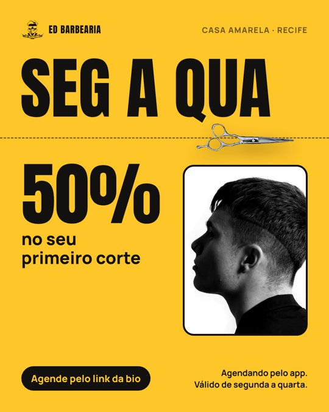
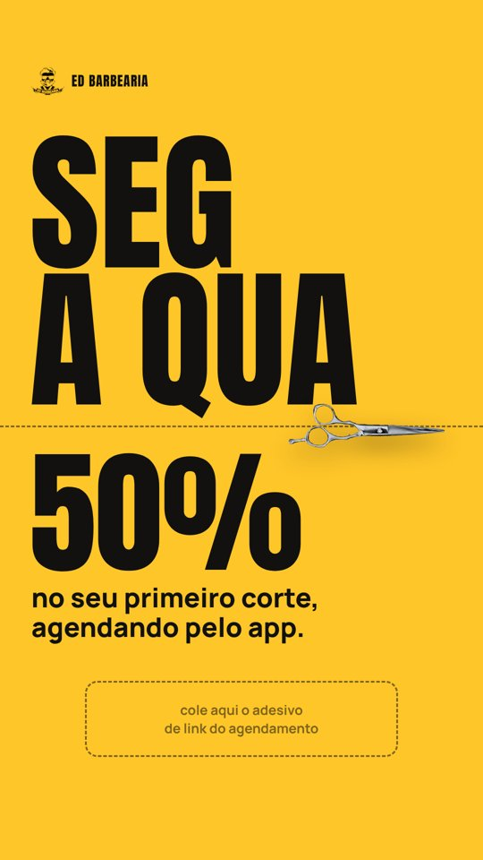
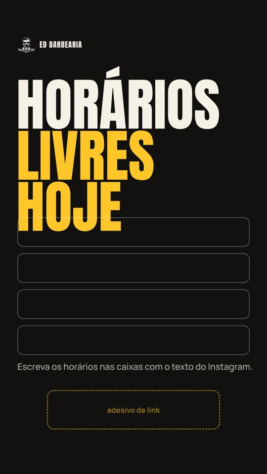
Em 27/11 (Black Friday) a gente não cria desconto novo: a mensagem é “a Black da ED é toda semana, de segunda a quarta”. Em 30/11 a campanha passa o bastão pra agenda de dezembro.
Uma visita por semana, sempre na quarta. Em toda visita a gente grava stories de bastidor, além do que está na pauta.
Pauta aprovada com o Ed + grava R1 e R2 + stories
Bio, 8 destaques e A1 fixada
Grava R3, R4 e R5 + stories
Ensaio: cortes, ambiente, equipe e o Ed (fotos de A1 e A4)
Grava R6 e R7 + stories
Alcance, seguidores, agendamentos e pauta de dezembro
Agendar no app os clientes de cada Reels (lista em “Próximos passos”) e avisar que vão aparecer no Instagram. Pedir autorização de imagem, principalmente de crianças. Gravar todos os “antes” antes do primeiro corte.
Terça, quinta e sábado às 18h30, com segunda nos dias de estreia. Os 3 fixados ficam: campanha, como agendar e o Ed.
| 09/11 | seg | A1 | Arte | Campanha Seg a Qua: 50% no 1º corte | FIXAR |
| 10/11 | ter | R1 | Reels | Degradê sem marca | |
| 12/11 | qui | A2 | Carrossel | Agendar na ED leva 3 toques + tabela | FIXAR |
| 14/11 | sáb | R2 | Reels | Chegou pedindo socorro | |
| 17/11 | ter | R3 | Reels | O Ed responde: qual corte pro teu rosto | |
| 19/11 | qui | R4 | Reels | Movimentos da navalha, parte 2 | |
| 21/11 | sáb | A3 | Carrossel | Quem senta na cadeira da ED, volta (o Ed) | FIXAR |
| 24/11 | ter | R5 | Reels | Agendou pelo app, sentou na hora | |
| 26/11 | qui | A4 | Carrossel | Qual corte é o seu? | |
| 28/11 | sáb | R6 | Reels | Barba completa: o ritual | |
| 30/11 | seg | R7 | Reels | Pai e filho na mesma cadeira |
As próximas páginas têm o que postar em cada dia. Leva 5 minutos e quem estiver livre entre um cliente e outro pode fazer.
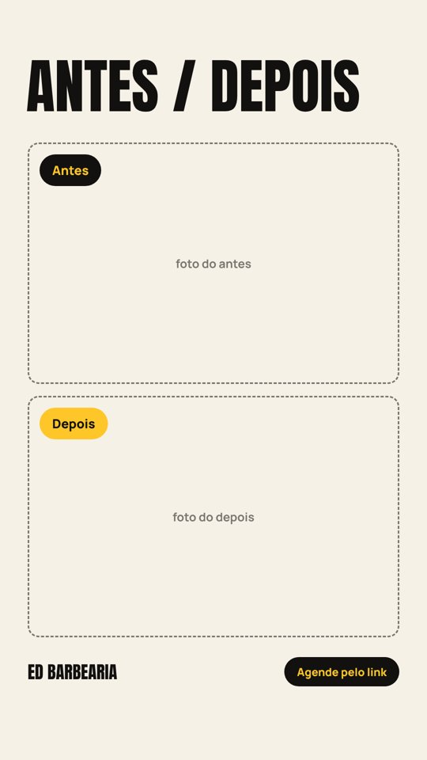
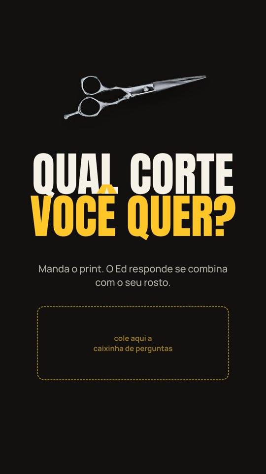
Os modelos de story já têm o espaço marcado para o adesivo de link, a caixinha ou as fotos. É só abrir no Instagram e completar.
| Dia | Tema | O que gravar | Adesivo / chamada |
|---|---|---|---|
| 04/11qua | Dia de gravação Visita 1 | 1. Bastidor da House gravando (luz, celular, cadeira) · 2. Cliente do Reels antes de começar · 3. “Tem novidade chegando no perfil dia 9” | Enquete: degradê ou social? + link de agendar |
| 05/11qui | Bastidor técnico | 1. Close de 10 s da máquina ou navalha trabalhando · 2. Mão do barbeiro fazendo o contorno · 3. Resultado final no espelho | Arte story-04 com caixinha: qual corte você quer? |
| 06/11sex | Bom dia da ED | 1. Abrindo a porta e a primeira cadeira do dia · 2. Primeiro cliente sentando (pedir autorização) · 3. Resultado do primeiro corte, de perfil | Arte story-03 (antes/depois) do cliente do dia |
| 07/11sáb | Casa cheia | 1. Timelapse de 15 s do movimento · 2. 3 resultados do dia em sequência · 3. Barbeiro mostrando a agenda de segunda | Link de agendar: “segunda já tem horário” |
| 08/11dom | Repost de clientes Fechado | 1. Repostar stories em que clientes marcaram a @edbarbearia · 2. Story de texto: “Amanhã começa a semana do 50%” | Lembrete de evento: 09/11 |
| 09/11seg | Estreia da campanha e do perfil novo Campanha | 1. Arte story-01 (Seg a Qua · 50%) · 2. Tela do perfil novo mostrando os destaques · 3. Arte story-02 com os horários livres de hoje | Link de agendar em todos |
| 10/11ter | Horários livres + R1 Campanha | 1. Arte story-02 com horários de hoje · 2. Compartilhar o Reels R1 · 3. Cliente em 10 s: “como ficou?” | Link de agendar |
| Dia | Tema | O que gravar | Adesivo / chamada |
|---|---|---|---|
| 11/11qua | Último dia da semana do 50% CampanhaVisita 2 | 1. Story de texto: “só até hoje nesta semana” · 2. Bastidor da gravação · 3. Cliente que veio pelo 50% em 10 s: “como ficou?” | Contagem regressiva até 19h + link |
| 12/11qui | Como agendar (A2) | 1. Repostar o carrossel A2 · 2. Gravar a tela do celular agendando de verdade no app (20 s) · 3. “Pronto, marcado” | Link de agendar |
| 13/11sex | Antes e depois do dia | 1. Antes de um cliente do dia · 2. Depois, de perfil · 3. “Sábado ainda tem horário” | Arte story-03 + link |
| 14/11sáb | Casa cheia + R2 | 1. Compartilhar o Reels R2 · 2. Timelapse do sábado · 3. Enquete: barba cheia ou só o contorno? | Link de agendar |
| 15/11dom | Pergunte ao Ed Fechado | 1. Story de texto: “Manda tua dúvida pro Ed” | Caixinha de perguntas (respostas na segunda) |
| 16/11seg | O Ed responde Campanha | 1. Ed respondendo 3 perguntas da caixinha em vídeo selfie (até 30 s cada) · 2. Arte story-01 | Link de agendar |
| 17/11ter | Horários livres + R3 Campanha | 1. Arte story-02 com horários · 2. Compartilhar o Reels R3 · 3. Resultado do dia | Link de agendar |
| Dia | Tema | O que gravar | Adesivo / chamada |
|---|---|---|---|
| 18/11qua | Dia do ensaio CampanhaVisita 3 | 1. Bastidor das fotos · 2. Cada barbeiro se apresenta: nome e corte favorito (1 story cada) · 3. “Último dia do 50% nesta semana” | Enquete: qual barbeiro você já conhece? + contagem regressiva |
| 19/11qui | Espaço kids + R4 | 1. Criança na cadeira (só com autorização dos pais) · 2. Resultado com o pai ou a mãe · 3. Compartilhar o Reels R4 | Link de agendar |
| 20/11sex | Consciência Negra Feriado | 1. Se abrir: “aberto no feriado” + horários livres · 2. Se fechar: aviso e link para agendar sábado | Confirmar com o Ed até 18/11 |
| 21/11sáb | Um dia com o Ed (A3) | 1. Repostar o carrossel A3 · 2. Ed chegando e preparando a bancada · 3. Ed revisando um acabamento | Link de agendar |
| 22/11dom | Repost + teaser Fechado | 1. Repostar clientes que marcaram a ED · 2. “Amanhã volta o 50% no 1º corte” | Lembrete de evento: 23/11 |
| 23/11seg | Abertura da semana Campanha | 1. Arte story-01 · 2. Arte story-02 com horários · 3. Bastidor da manhã | Link de agendar |
| 24/11ter | Prova real + R5 Campanha | 1. Compartilhar o Reels R5 · 2. Depoimento de quem usou o 50% (10 a 15 s) · 3. Resultado do dia | Link de agendar |
| Dia | Tema | O que gravar | Adesivo / chamada |
|---|---|---|---|
| 25/11qua | Última quarta do 50% no mês CampanhaVisita 4 | 1. Bastidor da gravação · 2. “Última quarta do mês com 50%” · 3. Antes e depois do dia | Contagem regressiva + link |
| 26/11qui | Qual corte é o seu (A4) | 1. Repostar o carrossel A4 · 2. Enquete com os 3 cortes · 3. Caixinha: manda o print do corte que você quer | Arte story-04 + link |
| 27/11sex | A nossa Black é toda semana Black Friday | 1. Story de texto: “A Black da ED é de segunda a quarta: 50% no 1º corte” · 2. Horários livres de sábado · 3. Resultado do dia | Link de agendar |
| 28/11sáb | Casa cheia + R6 | 1. Compartilhar o Reels R6 · 2. Timelapse do sábado · 3. “Dezembro lota: já dá pra marcar” | Link de agendar |
| 29/11dom | Retrospectiva do mês Fechado | 1. Os 3 melhores cortes de novembro · 2. Agradecimento aos clientes | Caixinha: o que você quer ver em dezembro? |
| 30/11seg | Agenda de dezembro aberta Campanha | 1. Compartilhar o Reels R7 · 2. Arte story-01 · 3. “A agenda de dezembro já está aberta no app” | Link de agendar |
Regra dos Reels da ED: abrir com fala ou ação, mostrar a técnica, terminar no resultado e chamar pro app.
Antes: “Do zero ao degradê em 30 segundos”. Dizia o formato, mas não dava motivo pra ficar. A abertura nova começa no resultado e volta pro início.
Gancho (0 a 3 s) · gravar as 3 aberturasSom real da máquina alto, música em alta bem baixa. Na dica, a voz do Ed na frente.
Capa: nuca pronta + “DEGRADÊ SEM MARCA”.
Antes: “Ele chegou assim...”. Todo antes e depois começa assim. Agora quem abre é o cliente, falando de verdade.
Gancho (0 a 3 s) · gravar as 3 aberturasMúsica em alta + voz do cliente no gancho e na reação.
Capa: antes e depois em tela dividida + “CHEGOU PEDINDO SOCORRO”.
O gancho já era bom. Agora fecha pedindo comentário e direct, e as perguntas viram pauta do “Pergunte ao Ed”.
Gancho (0 a 3 s) · gravar as 3 aberturasVoz do Ed com microfone de lapela, música bem baixa ou nenhuma. Legenda na tela o tempo todo.
Capa: Ed apontando + “QUAL CORTE PRO TEU ROSTO?”.
Antes: “Parte 2, porque vocês pediram”. Só funciona pra quem viu a parte 1. Esse conteúdo atrai muito barbeiro: serve pra alcance e pro curso.
Gancho (0 a 3 s) · gravar as 3 aberturasVoz do Ed + som real da navalha, música bem baixa.
Capa: navalha de perto + “NAVALHA · PARTE 2”.
Grava numa quarta de campanha, com um cliente que agendou pelo 50% de verdade. O POV vira prova.
Gancho (0 a 3 s) · gravar as 3 aberturasMúsica em alta. Som de notificação no “confirmar”.
Capa: celular com o app + “SEM FILA”.
Antes não tinha texto nem fala no gancho, só a imagem. Agora tem frase, e o som entra como atração.
Gancho (0 a 3 s) · gravar as 3 aberturasSom real (toalha, espuma, navalha) na frente, música bem baixa.
Capa: toalha com vapor + “O RITUAL DA BARBA”.
O gancho já era bom. Agora pede voto nos comentários e fecha com a agenda de dezembro.
Gancho (0 a 3 s) · gravar as 3 aberturasMúsica em alta, leve.
Capa: os dois no espelho + “PAI E FILHO”.
Segunda a quarta a ED tem 50% no seu primeiro corte. É só agendar pelo app, escolher o horário e sentar na cadeira. Link na bio. 📍 Rua Paula Batista, 604, Casa Amarela.
1080 × 1350 px · arquivos na pasta artes. As fotos dos cortes são provisórias: trocar pelas do ensaio de 18/11.
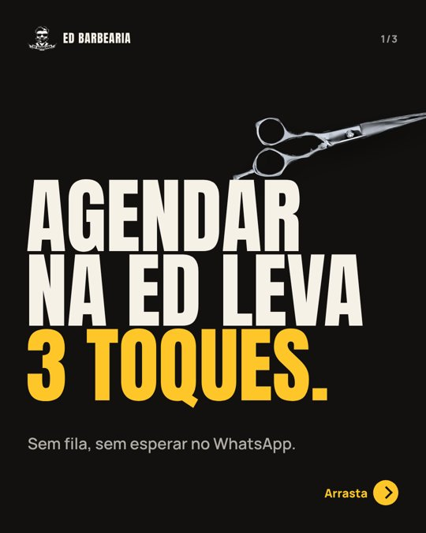
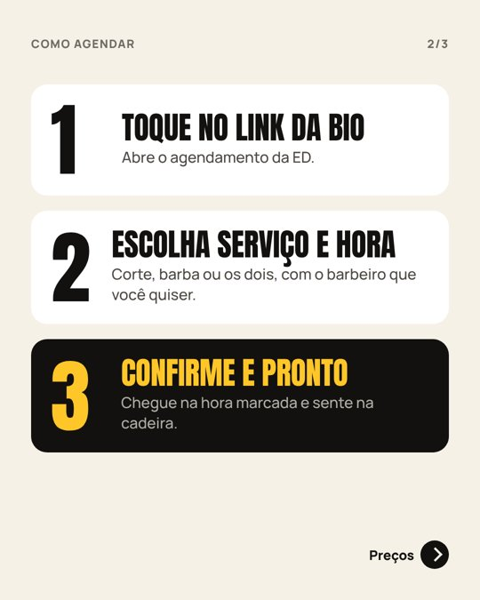
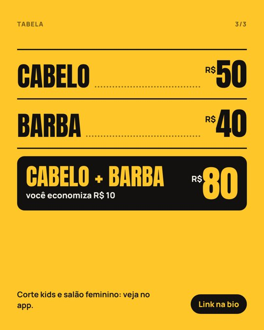
Agendar na ED leva 3 toques: link da bio, serviço e hora, confirmar. Arrasta pra ver a tabela. Cabelo R$ 50, barba R$ 40, cabelo + barba R$ 80.
1080 × 1350 px · arquivos na pasta artes.
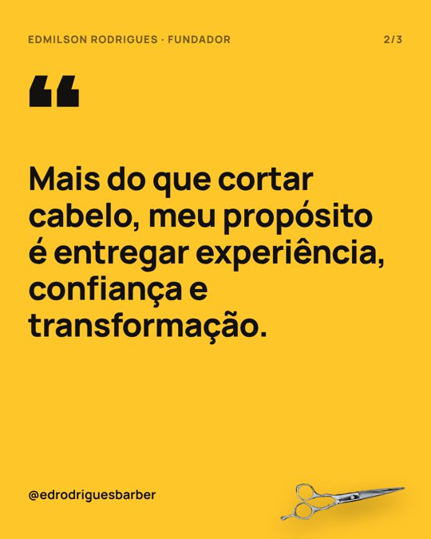
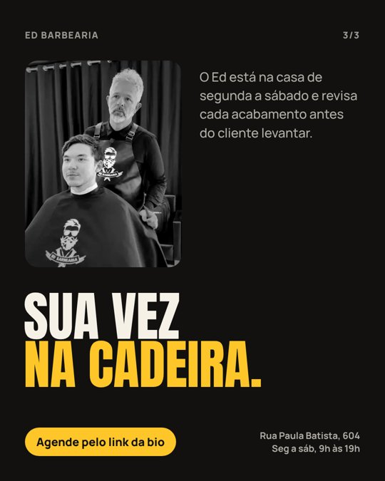
Quem senta na cadeira da ED, volta. O Ed está na casa de segunda a sábado e revisa cada acabamento antes de você levantar. Sua vez: link na bio.
1080 × 1350 px · arquivos na pasta artes.
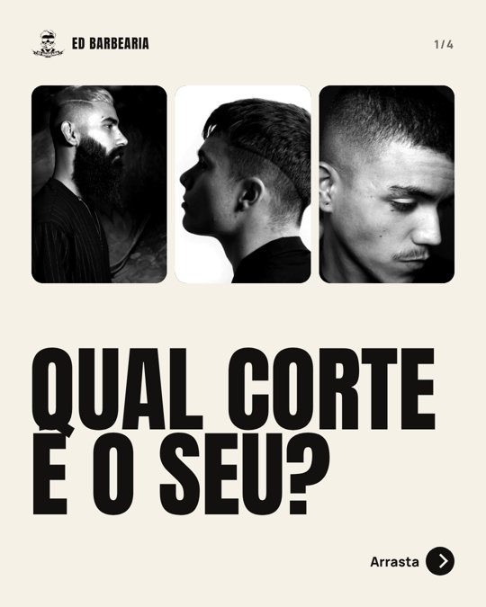
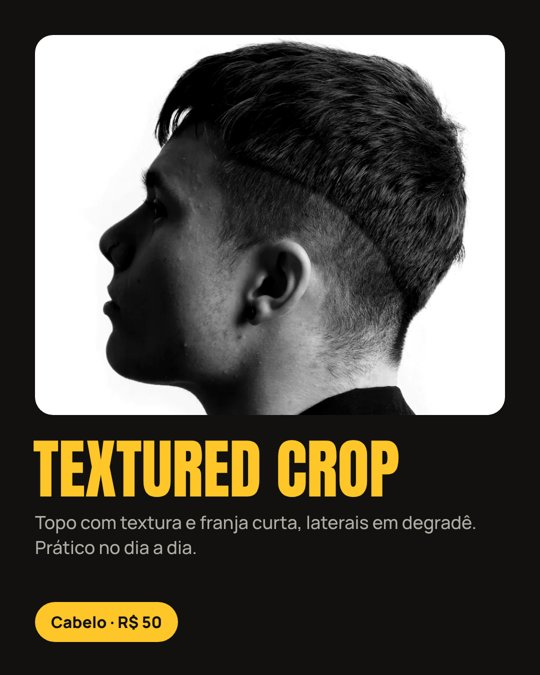
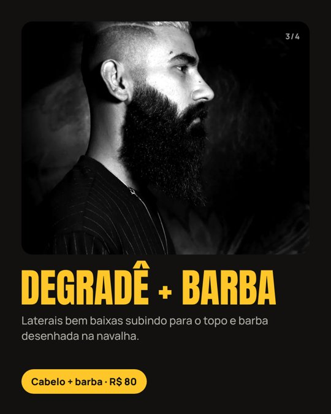
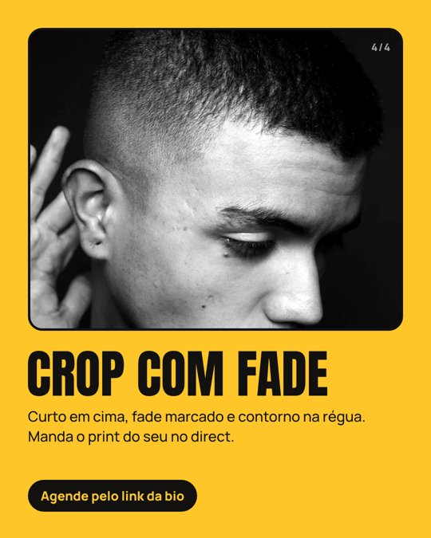
Qual corte é o seu? Textured crop, degradê com barba ou crop com fade. Comenta o número e manda o print do seu corte no direct. Agende pelo link da bio.
1080 × 1350 px · arquivos na pasta artes. As fotos dos cortes são provisórias: trocar pelas do ensaio de 18/11.
ED BARBEARIA | Casa Amarela, Recife
✂️ Degradê, barba, kids e salão
🗓️ Seg a sáb, 9h às 19h
🎟️ 50% no 1º corte: seg a qua, pelo app
👇 Agende em 1 toque
Link da bio: landing page da ED (agendar, WhatsApp e mapa num lugar só).
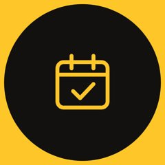
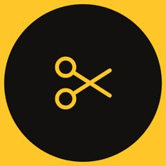
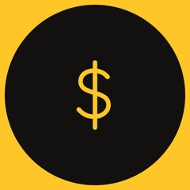
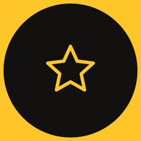
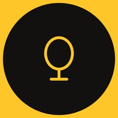
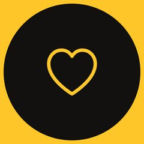
Sai o destaque duplicado “Curso / CURSO”. O conteúdo de aluno vai só pro destaque CURSO, e o feed fala com o cliente.
No dia 30 sai o relatório. O que funcionou vira pauta de dezembro, o mês mais cheio do ano.
Contas alcançadas e de onde vieram
Ganhos no mês, partindo de 3.199
Views de R1 a R7, comparando com a média de 600 a 2,6 mil, e qual abertura funcionou melhor
Cliques no link e no WhatsApp
Total do mês no app e só de seg a qua (pedir o número ao Ed)
Quantos clientes usaram os 50% no 1º corte e quantos comentaram as palavras-chave (ROSTO, 1 ou 2)
Ed aprova este plano hoje, 04/11, antes da primeira gravação.
Se a ED abre em 20/11 (Consciência Negra). Até 18/11.
11/11: 1 de contorno (R4) e 1 cliente novo do 50% (R5). 18/11: modelos dos 3 cortes da A4. 25/11: 1 de barba cheia (R6) e pai e filho (R7).
Definir quem posta os stories de cada dia e como o app mostra que é o 1º corte.
Todo conteúdo é aprovado antes de ir ao ar. Dúvidas e ajustes: WhatsApp (81) 98355-4583 · @housedocreator